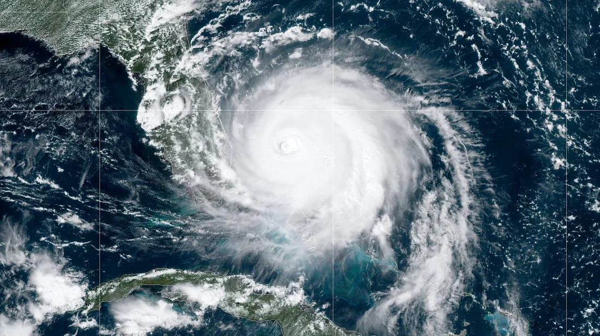

This page contains a list of some interesting records that have something to do with weather.
For example:
Highest / lowest measured Temprature
Strongest earthquake
Highest tsunami
Most precipitation per m²

Highest measured Temperature: According to the World Meteorological Organization (WMO), the highest temperature ever recorded was 56.7 °C (134.1 °F) on 10 July 1913 in Furnace Creek (Greenland Ranch), California, United States,[8] but the validity of this record is challenged as possible problems with the reading have since been discovered.
Here is a list of the 5 strongest earthquakes
Number 5: 1952 Severo-Kurilsk earthquake
The 1952 Severo-Kurilsk earthquake struck off the coast of the Kamchatka Peninsula. The 9.0 Mw earthquake triggered a major tsunami that hit Severo-Kurilsk, Kuril Islands, Sakhalin Oblast, Russian SFSR, USSR, on 4 November 1952. This was the most powerful earthquake in Russian history.
Number 4: 2011 Tōhoku earthquake
The 2011 Tōhoku earthquake was a undersea megathrust earthquake that occurred off the coast of Japan on Friday 11 March 2011. It was the most powerful earthquake ever recorded in Japan and it caused a 40 meter high Tsunami.
The tsunami caused nuclear accidents, primarily the level 7 meltdowns at three reactors in the Fukushima Daiichi Nuclear Power Plant complex, and the associated evacuation zones affecting hundreds of thousands of residents. Many electrical generators ran out of fuel. The loss of electrical power halted cooling systems, causing heat to build up. The heat build-up caused the generation of hydrogen gas. Without ventilation, gas accumulated within the reactor containment structures and eventually exploded. Residents within a 20 km (12 mi) radius of the Fukushima Daiichi Nuclear Power Plant and a 10 km radius of the Fukushima Daini Nuclear Power Plant were evacuated.
Number 3: 2004 Indian Ocean earthquake and tsunami
The 2004 Indian Ocean earthquake and tsunami occurred on 26 December. It was an undersea megathrust earthquake that registered a magnitude of 9.1–9.3 Mw and it was ,caused by a rupture along the fault between the Burma Plate and the Indian Plate.
A series of large tsunami waves up to 30 metres high were created by the underwater seismic activity and they killed an estimated 227,898 people in 14 countries.
Number 2: 1964 Alaska earthquake
The 1964 Alaskan earthquake, which is also known as the Great Alaskan earthquake and Good Friday earthquake, occurred March 27. Across south-central Alaska, ground fissures, collapsing structures, and tsunamis resulting from the earthquake caused about 131 deaths. This was the most powerful Earthquake in the History of North America.
Number 1: 1960 Valdivia earthquake
The 1960 Valdivia earthquake or the Great Chilean earthquake on 22 May 1960 is the most powerful earthquake ever recorded. Various studies have placed it at 9.4–9.6 on the moment magnitude scale. It occurred in the afternoon15:11 local time, and lasted approximately 10 minutes. The resulting tsunami affected southern Chile, Hawaii, Japan, the Philippines, eastern New Zealand, southeast Australia, and the Aleutian Islands.
Highest tsunami: On the night of July 9, 1958, an earthquake along the Fairweather Fault in the Alaska Panhandle loosened about 30.6 million cubic meters of rock high above the northeastern shore of Lituya Bay. This mass of rock plunged from an altitude of approximately 914 meters down into the waters of Gilbert Inlet (see map below). The impact force of the rockfall generated a local tsunami that crashed against the southwest shoreline of Gilbert Inlet. The wave hit with such power that it swept completely over the spur of land that separates Gilbert Inlet from the main body of Lituya Bay. The wave then continued down the entire length of Lituya Bay, over La Chaussee Spit and into the Gulf of Alaska. The force of the wave removed all trees and vegetation from elevations as high as 524 meters above sea level. Millions of trees were uprooted and swept away by the wave. This is the highest wave that has ever been known.
Most precipitation per m²: Cherrapunji
This town holds 2 records in terms of rainfall:
Most rainfall in a single year: 26,461 mm between August 1, 1860 and July 31, 1861.
Most precipitation in a single month: 9299.96 mm in July 1861.